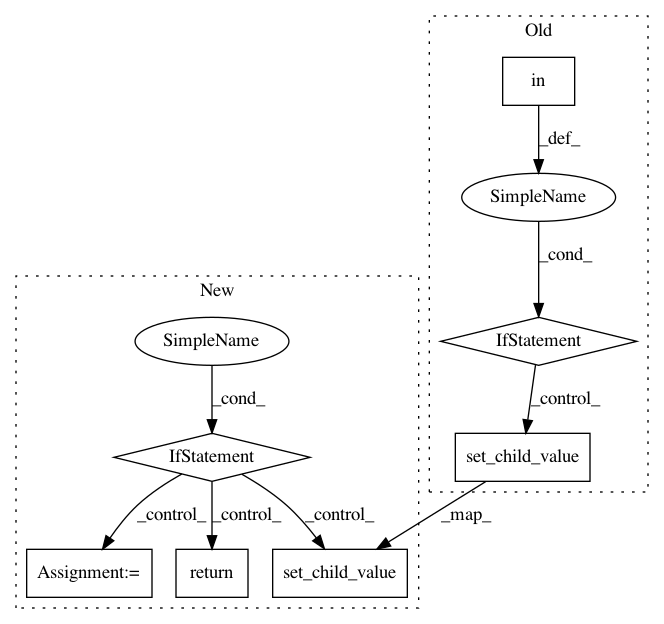

138205a0199d00455ddd30d180ae22831d3924cc,homeassistant/components/light/mysensors.py,MySensorsLight,_turn_on_dimmer,#MySensorsLight#,111
Before Change
set_req = self.gateway.const.SetReq
brightness = self._brightness
if ATTR_BRIGHTNESS in kwargs and \
kwargs[ATTR_BRIGHTNESS] != self._brightness:
brightness = kwargs[ATTR_BRIGHTNESS]
percent = round(100 * brightness / 255)
self.gateway.set_child_value(
self.node_id, self.child_id, set_req.V_DIMMER, percent)
if self.gateway.optimistic:
// optimistically assume that light has changed state
self._brightness = brightness
self.update_ha_state()
After Change
set_req = self.gateway.const.SetReq
brightness = self._brightness
if ATTR_BRIGHTNESS not in kwargs or \
kwargs[ATTR_BRIGHTNESS] == self._brightness or \
set_req.V_DIMMER not in self._values:
return
brightness = kwargs[ATTR_BRIGHTNESS]
percent = round(100 * brightness / 255)
self.gateway.set_child_value(
self.node_id, self.child_id, set_req.V_DIMMER, percent)
if self.gateway.optimistic:
// optimistically assume that light has changed state
self._brightness = brightness
self._values[set_req.V_DIMMER] = percent
self.update_ha_state()
def _turn_on_rgb_and_w(self, hex_template, **kwargs):
Turn on RGB or RGBW child device.
In pattern: SUPERPATTERN
Frequency: 3
Non-data size: 7
Instances
Project Name: home-assistant/home-assistant
Commit Name: 138205a0199d00455ddd30d180ae22831d3924cc
Time: 2016-09-20
Author: mail@marcpabst.de
File Name: homeassistant/components/light/mysensors.py
Class Name: MySensorsLight
Method Name: _turn_on_dimmer
Project Name: home-assistant/home-assistant
Commit Name: 986873834aa8e11832e0816fdd243d00478cffdf
Time: 2016-09-24
Author: marhje52@kth.se
File Name: homeassistant/components/light/mysensors.py
Class Name: MySensorsLight
Method Name: _turn_on_rgb_and_w
Project Name: home-assistant/home-assistant
Commit Name: 138205a0199d00455ddd30d180ae22831d3924cc
Time: 2016-09-20
Author: mail@marcpabst.de
File Name: homeassistant/components/light/mysensors.py
Class Name: MySensorsLight
Method Name: _turn_on_light